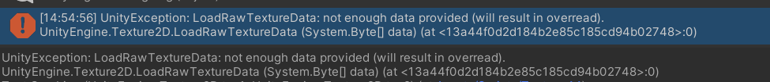

Mesh合并
1. 前言
要在屏幕上绘制游戏对象，引擎必须向图形 API（例如 OpenGL 或 Direct3D）发出绘制调用。绘制调用通常为资源密集型操作，图形 API 为每次绘制调用执行大量工作，从而导致 CPU 端的性能开销。此开销的主要原因是绘制调用之间的状态变化（例如切换到不同材质），而这种情况会导致图形驱动程序中执行资源密集型验证和转换步骤。
Unity可以通过以下方法进行优化：
- 动态批处理：对于足够小的网格，此方法会在 CPU 上转换网格的顶点，将许多相似顶点组合在一起，并一次性绘制它们。
- 静态批处理：将静态（不移动）游戏对象组合成大网格，并以较快的速度渲染它们。
但是，也有一些缺点；静态批处理会导致内存和存储开销，动态批处理会产生一些 CPU 开销。
除此之外还可以利用Unity提供的 Mesh.CombineMeshes API在运行是合并网格，最近在优化具有换装需求的项目时正好使用到。
2. 实现
2.1 流程
前提：使用相同材质
- 收集需要合并的Texture
- 收集需要合并的UV信息
- 合并根节点下的Mesh、Texture、UV
2.2 收集需要合并Texture
每个部位用到的Texture不同，因此先合并贴图：
1 | /// <summary> |
2.3 收集UV数据
在本次实践中，shader用到了uv2，因此需要一起合并，类似可以拓展到uv3，uv4…
1 | public List<Vector2[]> CollectCombineUVList(GameObject model, List<Vector2[]> uv1List, ref int uv1Count, List<Vector2[]> uv2List, ref int uv2Count) |
2.4 合并完整代码
1 | private void SkinnedMeshCombine(GameObject model) |
原本模型下有多个SkinnedMeshRenderer，合并后只有一个了（旧的都被删除），虽然占用的内存变多了，但是原本渲染一个模型需要渲染头、四肢、身体、鞋子，和额外的装备，每部分都是不同的mesh，这样至少需要4个Draw Call（没有额外装备的情况），合并mesh和texture后，只需要一个Draw Call便可完整绘制，内存的付出是值得的。
2.5 另一种合并Texture的方式
1 | Texture2D Combine(Texture2D tex1, Texture2D tex2) |
合并Texture应遵循：
- Texture压缩格式一致
- Texture为正方形且分辨率一致
- 申请合并后的Texture数组应和两张图合并的byte数一致，取决于不同压缩算法
常见错误：
合并Texture时，新创建的数据集大于合并的数据集，报错:
- 